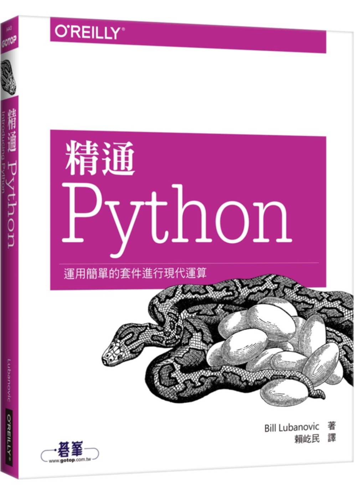

你好我叫楊子軒，是北漂台南人今年32歲，東華大學心理系肄業。這裡對於大學肄業的事情，簡單說一下就是當初考大學只被教導考試考好就好，而不是去想自己究竟想做什麼，讀著讀著也失去了興趣。然而大學沒有念完卻是我至今的痛。
出社會後主要在耳機圈打滾(個人興趣)，曾當過店員與業務。今天已經是一個孩子的爸了，但之前工作卻覺得不太是自己真正想做的，深深感覺自己還是需要一個技能，因此希望能夠認真的養成一個且是在自己有興趣的範圍之內，畢竟有興趣的事情做起來才更有動力。
目前待業進修中。
大約在2018年左右，我開始接觸Python，動機是因為本身喜歡玩遊戲，對於遊戲背後程式的運作相當有興趣。也因為當初的不了解，學一陣子之後才發現Python本身並不是主要拿來開發遊戲的，但看在好上手而且有興趣份上還是買了一些書來看，並且用一台老Macbook試著開始在上班之餘學習。
之後的日子寫程式偶爾能帶給我一點踏實與成就感，如之前幫家裡小工廠寫了一個簡單由叫貨量來快速算出原料的需求量的簡單程式。
最後要說為什麼想成為工程師，主要是從小到大接觸且熱愛電腦，而希望能更了解電腦，進而希望學習一個能夠以此穩定吃飯的一技之長。另外則是寫程式時的平靜感覺，以及一種像堆砌城堡的成就感。
之前自學啃了快一年的精通Python(O'Reilly)還有一些其他書籍如資料科學學習手冊等等，那時候真的時常唸到滿頭問號。之後偶然在YT上看到彭彭老師的教學，覺得教學內容與速度都是很合自己步調的，就把python基礎的部分看完了，而後面一些關於資料處理的部分礙於上班時間與理解能力龜速自學中。
近日則是跑來學習前端HTML CSS與JS，也發現python與JS的概念重複性高，所以學得還算開心。題外話Github則是大概一兩個月前才搞懂要怎麼用。
在沒看到彭彭老師的計畫前(或之後不幸沒有錄取老師的計畫)，原定計畫繼續往SQL以及React,Django,JQuery學習(這些我八成都還不太清楚是什麼)，自己同時也在精進photoshop順便能夠自己創作東西應用於網頁美化上。
跟太太討論過，除基本生理需求與運動加上陪伴家人以外的時間都會拿來投入。
我希望自己可以跟上進度，碰到問題不會拖太久。而說到困難，可能就是自己其實很討厭開口找人幫忙這件事。
嗯，我希望自己碰到瓶頸且找資料也無法解決時，可以不討厭Ask for help。
像是橘子或是智冠之類的遊戲產業公司，雖然知道進去可能不會是做遊戲設計相關，但能夠在這個環境工作比較有我的靈魂。
其實，彭彭老師在YT上已經讓我受益良多，真的很感謝您願意把這些高質量的課程放在上面，讓大家都能夠學習。以上的話看在我也學過心理系的份上請相信我是真心的 謝謝。
用這個頁面順便複習一些之前學的一些東西，希望不會太影閱響讀